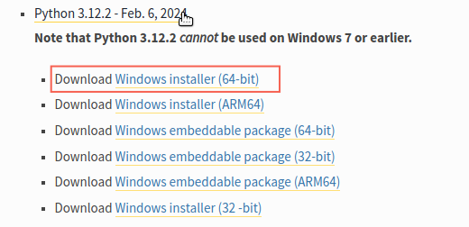
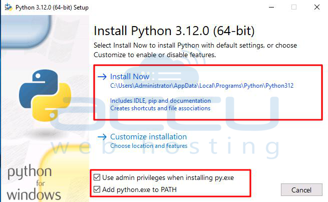
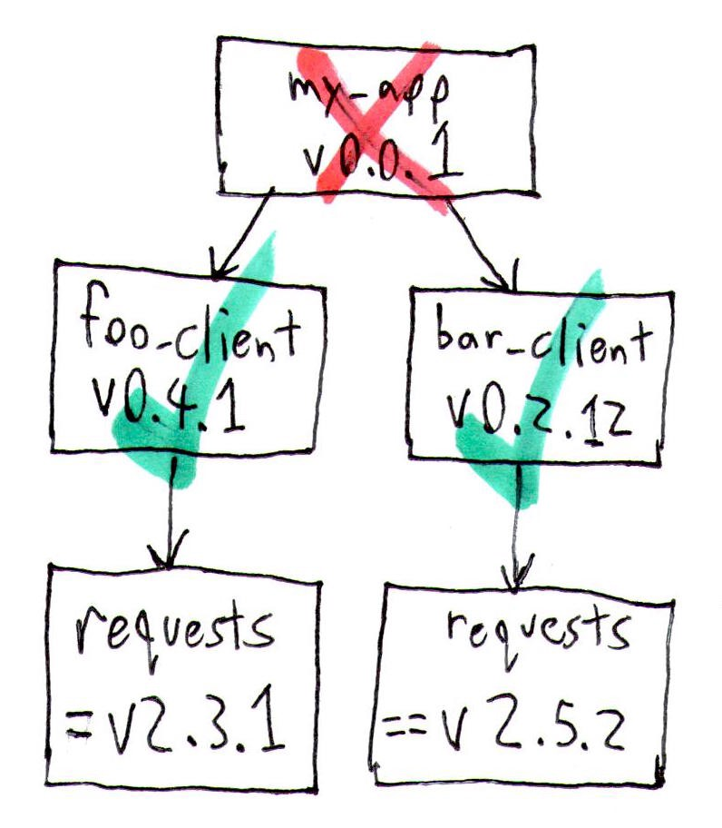

Keyboard shortcuts:
N/СпейсNext Slide
PPrevious Slide
OSlides Overview
ctrl+left clickZoom Element
If you want print version => add '
?print-pdf' at the end of slides URL (remove '#' fragment) and then print.
Like: https://wwwcourses.github.io/...CourseIntro.html?print-pdf
Python Installation.
Virtual Environment.
Setup ML Projects Workspace.
Created for

Iva E. Popova, 2024,

Python Installation (on Windows, Mac, Linux)
Install Python on Windows - HowTo
- Download the Python3 Installer:
- Navigate to Python Releases for Windows
- Look from "Stable Releases" the lates version (for now it is "Python 3.12.2 - Feb. 6, 2024")
- Select "Windows installer" 32-bit or 64-bit versions - according to your system
- Which version of Windows operating system am I running? 
{kind=link}
Install Python on Windows - HowTo
- Installation Steps: Using Python on Windows - installation-steps @docs.python.org
- Do not forget to select "Add Python to PATH" 
{kind=link}
Install Python on Mac - more info
Install Python on Linux
- If you use Ubuntu based distribution, you can install lates Python release by:
- Open up your terminal (Ctrl + Alt + T) and write:
- For other Linux distributions check: Using Python on Linux @docs.python.org
# Update your local system's repository
sudo apt update
# Install the latest version of Python
sudo apt install python3
Verify installation:
- Open a Terminal/Command Prompt and type:
# Windows: python -V # Linux/MacOS: python3 -V
Python Virtual Environments
Python Virtual Environments
Virtual environment - Why?
- Python apps usually depends on many modules(packages), which depends on other packages, and very often - from a specific version of a package.
- Many system tools also depends on specific versions of installed Python packages.
- You don't want to pollute your system's Python environment or to deal with dependency hell! 
{kind=link}
Virtual environment - What?
- A virtual environment is an isolated Python environment that allows packages to be installed for use by a particular application, rather than being installed system wide
- A virtual environment is a directory tree which contains Python interpreter, libraries and scripts installed into it, and other files which indicate that it is a virtual environment.
- There are many tools for working with virtual environments in Python (virtualenv, pipenv, poetry, conda, etc.)
- Starting with Python 3.4,
venvmodule is the preferred way to create and manage virtual environments. - venv module is included in the Python standard library and requires no additional installation.
Create Virtual Environment
# navigate to your project directory:
cd path\to\your\project
# create virtual environment with name ".venv"
python -m venv .venv
# a folder '.venv' is created in the project folder
.venvis a common name for a virtual environment as it keeps the directory typically hidden in your shell.- Note, that you need to create a virtiual environment per project only once.
- But each time you work in your project you must activate it.
- In order to install and use python packages in your virtiual env, you must activate it:
- If on PowerShell you receive an error File ... cannot be loaded because running scripts is disabled on this system you must first set the PowerShell execution policies (Set-ExecutionPolicy @microsoft.com):
- You can confirm you’re in the virtual environment by checking the location of your Python interpreter:
- If you want to switch projects or otherwise leave your virtual environment, simply run
# On Windows PowerShell run:
.venv\Scripts\Activate.ps1
# On Windows CommandPrompt run:
.venv\Scripts\activate.bat
# On Windows GitBash run:
source .venv\Scripts\activate
# On Linux, MacOS, run:
source .venv/bin/activate
Set-ExecutionPolicy Unrestricted -Scope Process
# now try again to activate:
.venv\Scripts\Activate.ps1
# On Windows, run:
where python
# On Unix or MacOS, run:
which python
# It should be in the .venv directory
deactivate
References
- Virtual Environments and Packages @python3 tutorial
Freezing the dependency versions
Freezing the dependency versions
Overview
- "Freezing the dependency versions" in the context of Python development refers to the practice of creating a snapshot of all the packages and their exact versions that your project depends on.
- This is crucial for ensuring consistency, reproducibility, and stability across different environments (development, testing, production) and when sharing the project with others.
- It helps to avoid the "it works on my machine" problem by ensuring that everyone working on the project uses the same versions of dependencies.
the pip freeze
- Before freezing dependencies, ensure that your virtual environment is activated. This ensures that the dependency list is specific to your project and not your global Python installation.
- Once your virtual environment is activated, use
pip freezeto list all installed packages and their exact versions. Then, redirect the output to a requirements.txt file: - This requirements.txt file now contains a snapshot of all packages (with versions) installed in your virtual environment.
pip freeze > requirements.txt
Using the 'requirements.txt' file
- When you or someone else needs to set up the project environment, you can use the requirements.txt file to install all the dependencies at their frozen versions. Run:
- This command installs the exact versions of the packages listed in requirements.txt, ensuring that the environment is consistent with the original setup.
pip install -r requirements.txt
PIP - the Python Package Manager
PIP - the Python Package Manager
- Python has a strong community which releases lot's of modules(packages), which you can use for free and focus on "get job done", instead of reinventing the wheel.
- pip is the tool for installing Python packages from PyPI (Python Package Index)
- Note, that if you do not use a Virtual Environment, a package installed by using pip will be installed in your system's python distribution.
pip basic commands
- get help on pip:
- pip help
- install a package from PyPI:
- pip install package_name
- uninstall a package
- pip uninstall package_name
- list installed packages:
- pip list
- upgrade a package:
- pip install --upgrade SomePackage
- show information about installed packages.:
- pip show package_name
- output installed packages in requirements format
- pip freeze
Reference: pip commands
More readings
Setup ML Projects Environment
Setup ML Projects Environment
Dedicated Workspace Directory
- Organizing multiple machine learning projects effectively on your computer ensures that you maintain a clean working environment, which is crucial for productivity and collaboration.
- On your computer create a dedicated workspace directory
ML_Projectsfor all your machine learning projects. - Use a consistent naming convention for your project directories that reflects the essence of each project, like:
~/ML_Projects/
├── datasets/ # Centralized datasets folder
├── PythonTraining/ # Folder for Python code during the training
├── Image_Classification_TM/ # Folder for Image_Classification with teachable machine project
├── Stock_Prediction/ # Folder for Stock_Prediction
├── NLP_Sentiment_Analysis/ # Folder for NLP_Sentiment_Analysis project
├── ...
Standard ML Project Structure
- Each project within the ML_Projects workspace should follow a consistent directory structure.
- This structure should include directories for your datasets, source code, notebooks, documentation, and virtual environments, among others.
- Here's an example of a well-organized project structure:
~/ML_Workspace/Project_Name/
├── .git/ # Git repository folder (will be creted by git)
├── data/ # Data directory (raw & processed)
├── docs/ # Documentation
├── models/ # Serialized models, model checkpoints
├── notebooks/ # Jupyter notebooks for exploration and presentations
├── src/ # Source code (Python modules, scripts)
│ ├── __init__.py # Makes src a Python package
│ └── ... # Other Python modules
├── tests/ # Test cases
├── .venv/ # Virtual environment
├── .gitignore # Specifies intentionally untracked files to ignore
├── README.md # Project overview, installation, and usage
└── requirements.txt # Project dependencies (will be creted by pip freeze)
Standard ML Project Structure - Exaplanations
- Data Directory (data/ or datasets/): Stores raw data, processed data, and potentially a separate section for data that should not be uploaded due to size or confidentiality.
- Notebooks Directory (notebooks/): Jupyter notebooks or other interactive computing notebooks for exploratory data analysis, visualization, and initial model experimentation.
- Source Code Directory (src/): Python scripts and modules for more structured and reusable code, including data preprocessing, model definition, training scripts, and utilities.
- Models Directory (models/): For saving model checkpoints, serialized models, and configuration files.
- Tests Directory (tests/): Contains tests for your code to ensure reliability and facilitate maintenance.
- Virtual Environment (venv/ or .venv/): A local virtual environment where project-specific dependencies are installed to avoid conflicts between projects.
- Requirements File (requirements.txt): Lists all the dependencies for your project, allowing anyone to replicate your environment.
- Documentation (README.md, docs/): Overview of the project, installation instructions, usage examples, and additional documentation.
Create Project Virtual Environment
- For each project, create a virtual environment within the project directory. This isolates the project's dependencies, preventing conflicts between projects.
# Navigate to your project directory
cd /path/ML_Workspace/Project_Name/
# Create a virtual environment
python -m venv .venv
# Activate the virtual environment
# On Windows (CommandPrompt)
venv\Scripts\activate.bat
# On Unix or MacOS
source venv/bin/activate
Install Project Dependencies
- To install your project dependencies you must navigate to your project directory and activate the virtual environment.
- Update pip: It's a good idea to ensure you have the latest version of pip, Python's package manager.
- Install Dependencies
- Reference: Installing packages using pip and virtual environments
# Navigate to your project directory
cd /path/ML_Workspace/Project_Name/
# Activate the virtual environment
# On Windows (CommandPrompt)
venv\Scripts\activate.bat
# On Unix or MacOS
source venv/bin/activate
python -m pip install --upgrade pip
pip install jupyterlab
pip install pandas
pip install matplotlib
pip install scikit-learn
Create git project repository
- Having a Git repository for your machine learning (ML) project offers numerous benefits, making it a best practice in both individual and collaborative development environments
- Track Changes: Git allows you to keep a history of changes made to your project files, enabling you to see what was modified, when, and by whom.
- Revert Changes: You can easily revert to previous versions of your project if something goes wrong, reducing the risk of losing important work.
- Branching: Git allows you to create branches, enabling you to experiment with new models, data preprocessing techniques, or features without affecting the main project. Once satisfied with the results, you can merge these changes into the main branch.
- Backup and Restore: Hosting your Git repository on platforms like GitHub serves as an offsite backup, safeguarding against data loss. If your local files are lost or corrupted, you can restore your entire project to a specific point in time from the remote repository.
- Collaboration: Multiple people can work on the same project simultaneously. Git helps manage these contributions, ensuring that changes don’t conflict with each other.
- Portfolio Development: For individuals, public Git repositories can serve as a portfolio of projects, showcasing skills and experience to potential employers or collaborators.
- You can easily create your project git repo with VSCode, as described in How To upload Files on GitHub (using VSCode)
The .gitignore file
- The .gitignore file is a text file that tells Git which files or directories to ignore in a project.
- It's particularly important in ML projects for several reasons:
- Data Privacy: Sensitive or personal data should not be uploaded to public repositories.
- Large Files: Datasets, model files, and other large assets can exceed Git's recommended size limits. These should be managed with specialized tools or stored separately.
- Virtual Environment: The virtual environment directory contains a lot of files that are specific to a developer's machine and can be easily recreated with requirements.txt. Including it in version control would unnecessarily bloat the repository.
- Temporary Files: Files like .pyc, .log, or IDE-specific directories (__pycache__/, .idea/, .vscode/) do not need to be tracked.
- Sample .gitignore for ML Projects
- Or you can use Python.gitignore Template
# Virtual environment
venv/
.venv/
# Python bytecode
__pycache__/
*.py[cod]
# Jupyter Notebook
.ipynb_checkpoints
# Datasets (if they are large or sensitive)
/data/
/datasets/
# Model checkpoints
/models/
# Log files
*.log
# OS files
.DS_Store